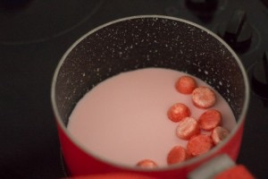
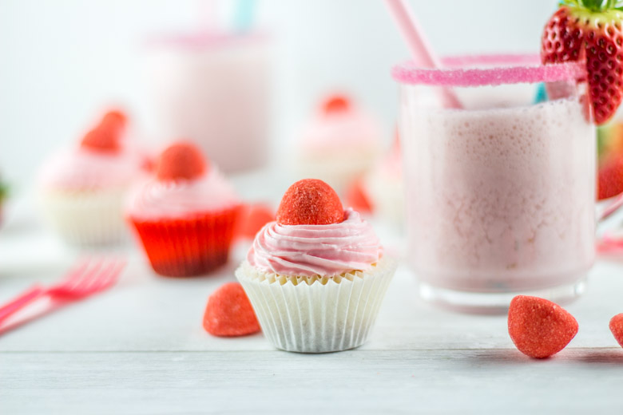
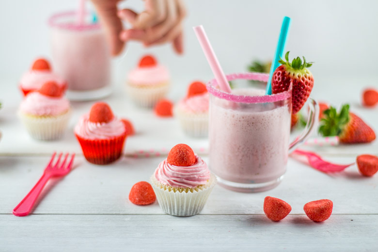
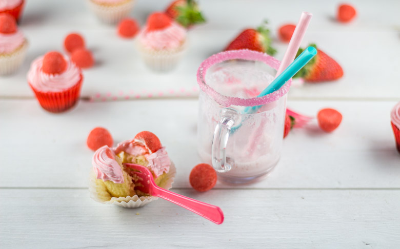

Cupcake tagada pour un goûter ultra girly!

Un cupcake tagada pour le goûter ça vous tente? Si oui, la recette est par ici!!
Avant de vous parler de mon cupcake tagada et de son lait à la fraise et au basilic je vais rapidement vous rappeler le pourquoi de cette recette!
En effet, aujourd’hui est le rendez-vous de la 6ème édition de la Foodista challenge et c’est Nath du blog Pourquoi je grossis? qui était en charge du nouveau thème.
Avant de vous présenter la recette et le thème voici un petit rappel pour vous présenter ce qu’est la Foodista :
Il s’agit d’un défi culinaire, entre blogueurs et non blogueurs autour d’un thème commun décidé par la marraine désignée à chaque édition, crée par… moi-même! J’ai donc fixé les règles du jeu et chaque marraine doit en plus de décider d’un thème, choisir deux règles parmi les suivantes (histoire de pimenter un peu le tout): – Un ingrédient imposé pour les recettes sucrées et un autre ingrédient pour les recettes salées (un ingrédient commun si cela est possible) ; – Une couleur qui devra être présente dans la recette ou dans la décoration ; – Un pays qui inspirera les recettes du thème ; – Un accessoire qui devra se trouver sur les photos
Anciennes éditions : Foodista Challenge #1 : Stéphanie de Cuisine moi un mouton : « Cupcakes & muffins » Foodista Challenge #2 : Lucie de Goulucieusement : « Goûter d’automne » Foodista Challenge #3 : Aude de Contes et Délices : « Le Brunch » Foodista Challenge #4 : Julia de Les Cookines : « Les recettes cosy de Scandinavie » Foodista Challenge #5 : Anaïs de Lemon and sardine : « Un zeste de méditerranée »
Il fallait donc cuisiner des petites bouchées et proposer une boisson en accompagnement. Comme en témoigne ma photo, j’ai donc eu envie de faire un goûter soooo girly pour un bon moment entre filles ou parfait pour un goûter avec les enfants!
Je vous propose alors de découvrir ma recette de minis cupcakes fraise tagada accompagnés d’un délicieux lait à la fraise et au basilic pour un après midi 100% régressif 🙂
Ingrédients
- Farine avec levure intégrée - 100g
- Farine - 75g
- Sucre - 150g
- Beurre mou - 125g
- Oeufs - 2
- Extrait de vanille ou 1 gousse de vanille - 1 càs
- Lait - 100ml
- Fraise tagada - 12
- Mascarpone - 250g
- Lait - 45ml
- Sucre glace - 4 càs
- Lait - 300ml
- Fraise - 200g
- Sucre en poudre - 3 càc
- Basilic - selon vos goûts!!
Instructions
- Dans une casserole à feu doux, faites chauffer le lait avec les fraises tagada Le sucre des fraises va se dissoudre. Une fois tout le rouge des fraises tagada fondu, il ne vous reste plus que la gélatine blanche. Jeter la et conserver le lait devenu tout rose
- Placer au frais pendant la préparation des cupcakes
- Pendant que les cupcakes refroidissent, mélanger très délicatement le lait refroidi avec le mascarpone et le sucre glace
- Replacer au frais jusqu'au moment de glacer les cupcakes
- Préchauffer le four à 180°
- Dans un grand récipient, mélanger le beurre mou avec le sucre pendant 3-4 minutes
- Ajouter les œufs uns à uns tout en continuant de mélanger
- Mélanger les deux farines et versez-en la moitié en mélangeant continuellement
- Mélanger la vanille avec le lait
- Verser la moitié du lait, puis le reste des farines et enfin le reste de lait
- Mélanger pour obtenir un mélange bien homogène
- Remplir les caissettes au 3/4
- Enfourner pendant 18 minutes à 180°
- Laissez les refroidir totalement avant de les glacer
- Dans le bol de votre blender mélanger les fraises et le lait
- Ajouter le sucre et mélanger




Les tips de la communauté
Cupcake très gourmand et ludique avec les bonbons Tagada. Les commentaires sont positifs sur le concept amusant et la gourmandise du résultat. L'association entre cupcakes réguliers et bonbons iconiques français plaît au public.
Astuces
- Les bonbons Tagada apportent une gourmandise ludique et reconnaissable
- Ajuster la quantité de sucre si les bonbons sont très sucrés
Ajustements signalés
- mettre à la place car je ne l’ai jamais tenté alors plutôt que de te répondre des bêtises je préfère m’abstenir!!! J’aurais tendance à te dire 5g mais je n’ai pas de certitudes. N’hesites pas a revenir vers moi si tu tentes l’expérience 🙂 Bonne journée!